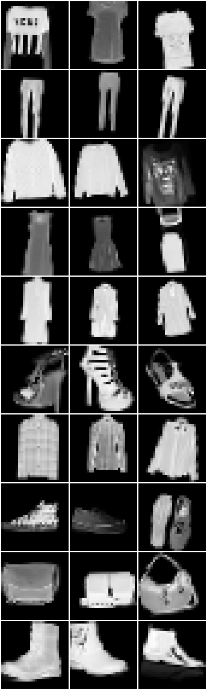

Lab 11 Exercise - CNN Embedding Challenge
LLM assistance was used during the elaboration of this exercise.
Learning goals
By the end of this lab you should be able to:
- Use a classification task as a proxy to learn a low-dimensional representation (an embedding) of images.
- Relate the geometry of an embedding to how well a Gaussian mixture model can cluster it.
- Reason about the distribution shift between two sources of data, and make a representation that still works on the new source.
1 Challenge
Your goal is to train a neural network that maps FashionMNIST-like images to a 5-dimensional embedding, such that the images of each of the 10 classes form a well separated, roughly Gaussian cluster. We will cluster your embeddings with a Gaussian mixture model (GMM) with 10 components, and compare the clusters with the true classes.
1.1 The training data
You may train on the FashionMNIST training set, which you can load with torchvision:
from torchvision import datasets, transforms
train_set = datasets.FashionMNIST(root="./data", train=True, download=True, transform=transforms.ToTensor())
test_set = datasets.FashionMNIST(root="./data", train=False, download=True, transform=transforms.ToTensor())Each image is a tensor of shape (1, 28, 28) with values between 0 and 1, and its label is one of 10 classes: T-shirt/top, Trouser, Pullover, Dress, Coat, Sandal, Shirt, Sneaker, Bag, Ankle boot.
1.2 The evaluation data
Your model will not be evaluated on FashionMNIST. The evaluation images show clothes from the same 10 classes that are not in FashionMNIST, but look like the ones in it. These images are also perturbed, with transformations like the shifts we saw and with other types of perturbations. These perturbations are aimed at highlighting the distribution shifts relative to FashionMNIST, which your representation should be robust to.
We release 3 labeled images per class from the evaluation set so you have an idea of what they look like and the distribution shifts present. You may use them in any way you like.

They are in X_sample.npy (shape (30, 28, 28), integer values between 0 and 255) and y_sample.npy (the labels, from 0 to 9):
import urllib.request
import numpy as np
import torch
base_url = "https://stat154.berkeley.edu/fall-2026/datasets/nn_lab_cont"
for name in ["X_sample.npy", "y_sample.npy"]:
urllib.request.urlretrieve(f"{base_url}/test_sample/{name}", name)
X_sample = torch.tensor(np.load("X_sample.npy")).float().div(255).unsqueeze(1) # shape (30, 1, 28, 28)
y_sample = torch.tensor(np.load("y_sample.npy")).long()1.3 Allowed methods
You may use any neural network architecture you like, as long as:
- its
embeddingmethod returns a 5-dimensional vector for each image (see below); - it is trained from scratch: no pretrained weights;
- it is trained only on the FashionMNIST data and the released examples above (you may transform them in any way you like);
- the file with its weights is at most 10 MB.
Any violations of the above policies may result in zero grade.
2 How to save your model
Besides your code, you will submit two files:
model_{codename}.py, which defines your architecture as a classEmbeddingNet, built with no arguments, with anembeddingmethod that takes a batch of images of shape(n, 1, 28, 28)and returns a tensor of shape(n, 5). This file may only importtorch(and its submodules), and must not read any file. For example, the CNN of lab 10 (make_cnn()), with a 5-dimensional embedding before the logits:
import torch
from torch import nn
class EmbeddingNet(nn.Module):
def __init__(self):
super().__init__()
self.features = nn.Sequential(
nn.Conv2d(1, 16, kernel_size=3, padding=1), nn.ReLU(), nn.MaxPool2d(2), # 1 x 28 x 28 -> 16 x 14 x 14
nn.Conv2d(16, 32, kernel_size=3, padding=1), nn.ReLU(), nn.MaxPool2d(2), # -> 32 x 7 x 7
nn.Conv2d(32, 64, kernel_size=3, padding=1), nn.ReLU(), nn.MaxPool2d(2), # -> 64 x 3 x 3
nn.Flatten(), # -> 64 * 3 * 3 = 576
nn.Linear(64 * 3 * 3, 64), nn.ReLU(),
nn.Linear(64, 5), # the 5-dimensional embedding
)
self.logits_layer = nn.Linear(5, 10)
def embedding(self, x):
return self.features(x)
def forward(self, x):
return self.logits_layer(self.embedding(x))weights_{codename}.pt, the trained weights of your model, saved like this:
torch.save(model.cpu().state_dict(), f"weights_{codename}.pt")Only the embedding method is used for scoring, so you are free to train your network with any loss, and with any other methods or layers you need. If your model needs any preprocessing of the images (for example, normalization), it must happen inside embedding: we will pass the images exactly as they are loaded above.
{codename} is a secret codename of your group’s choosing, that you will be able to use later to identify your submission on the leaderboard.
3 How your model will be scored
We will load your model, compute the embeddings of the evaluation images, standardize each of their 5 coordinates (mean 0 and variance 1), fit a GMM with 10 components to them, and compare the GMM clusters with the true classes using the adjusted Rand index (ARI). The ARI is 1 when the clusters are exactly the classes (up to relabeling), and about 0 for a random clustering. Standardizing makes the score independent of the scale of each coordinate of your embedding, and the GMM is fitted from 10 different initializations, keeping the best fit, so that the score depends less on the luck of a single initialization. We will run the code below, with the FashionMNIST test set replaced by the evaluation images. You can run it as is to check that your files work:
import importlib.util
import numpy as np
import torch
from sklearn.metrics import adjusted_rand_score
from sklearn.mixture import GaussianMixture
from sklearn.preprocessing import StandardScaler
from torch.utils.data import DataLoader
codename = "your_codename" # replace with your group's codename
# load the model
spec = importlib.util.spec_from_file_location("submission", f"model_{codename}.py")
submission = importlib.util.module_from_spec(spec)
spec.loader.exec_module(submission)
model = submission.EmbeddingNet()
model.load_state_dict(torch.load(f"weights_{codename}.pt", map_location="cpu", weights_only=True))
model.eval()
# compute the embeddings
eval_loader = DataLoader(test_set, batch_size=256, shuffle=False) # will be replaced by the evaluation images
Z, y = [], []
with torch.no_grad():
for images, labels in eval_loader:
Z.append(model.embedding(images))
y.append(labels)
Z, y = torch.cat(Z).numpy(), torch.cat(y).numpy()
assert Z.shape == (len(y), 5), f"expected embeddings of shape ({len(y)}, 5), got {Z.shape}"
# standardize, cluster and score
Z = Z.astype(np.float64) # in float32, the GMM can fail on nearly collinear coordinates
Z = StandardScaler().fit_transform(Z) # each coordinate to mean 0 and variance 1
gmm = GaussianMixture(n_components=10, covariance_type="full", n_init=10, random_state=42, init_params="kmeans")
clusters = gmm.fit_predict(Z)
print(f"ARI: {adjusted_rand_score(y, clusters):.4f}")A leaderboard will be published with every group’s codename alongside its ARI on the evaluation images, ranked from high to low. No other identifying information will be shared, so no other student will be able to know your rank on the leaderboard. The leaderboard is for your own benefit! The group with the highest ARI is the winner.
4 Gaussian Mixture Models and ARI
You may treat Gaussian Mixture Models and ARI as black boxes, although we highly encourage you to understand more about them using the links provided above.
The important intuition to keep from GMMs, and which we expect you to understand, is that a GMM tries to explain the data as a mixture of Gaussians, each corresponding to a cluster, and assigns each data point to the Gaussian it most likely came from.
This sets up the geometric structure you want your embedding to have: each class should be mapped to a distinct Gaussian well separated from the other classes, so that a GMM algorithm can recover the class assignment by simply trying to fit a mixture of Gaussians to the unlabeled embedded points.
Submission
Upload the three files on Gradescope by Tuesday Nov. 24th at 9 PM:
- your code, including your training loop;
model_{codename}.py;weights_{codename}.pt.
The grading will be based on completion of the task.
LLM usage policy
As usual, you may use auto-completion for filling out small code snippets (affect around 2-3 lines of code) and documenting your code. Small code snippets are things like “add a label for the axis of the plot”, “change the color of the points”, “add an argument for the number of interactions in the fit”. These are small code operations which do not involve significant planning nor automated changes to the logic of the code without your supervision. All edits must be verified and accepted manually, and you should make sure you know what the code is doing.
Things that are explicitly not allowed are major edits to the code (affect > 10 lines) and ones which involve automating huge parts of the development of the logic structure of your analysis. For example, “write a function to extract features from the data”, or “run a test set validation loop and report the best model”.
Delegate to language models only things which you know exactly how you would have done it yourself or would be comfortable googling/asking for help from someone who already took the course/knows how to code, but who cannot do the learning for you.